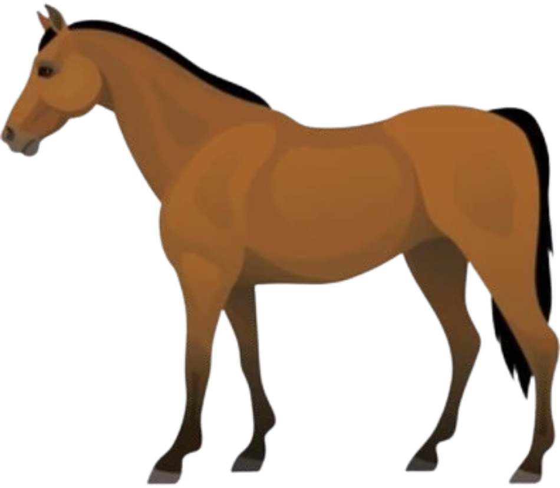
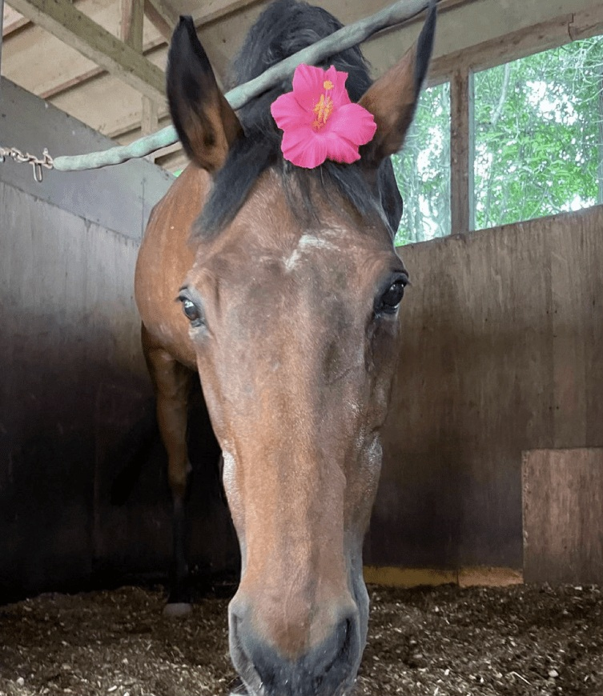
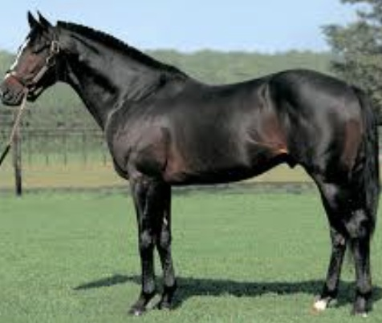
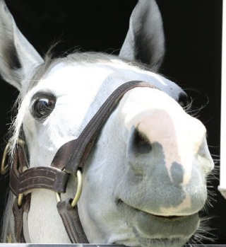
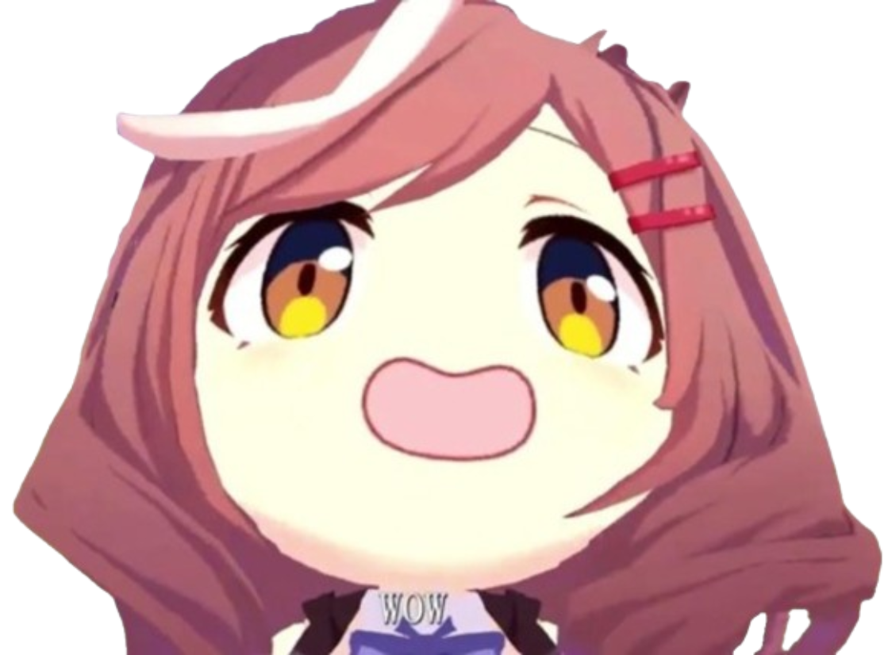

Welcome to the Horse World
Click on the buttons above to explore different aspects of horses.
History of Horses
Use the buttons or A & D to move the horse
Anatomy of a Horse
Learn about the different parts of a horse's body and their functions.
Input the keywords or click on the buttons to go to it!
Click on the buttons to learn more about each part of the horse's anatomy.
Horse Behavior
Learn about how horses interact, communicate, and live in herds.
Horse Herds
Horses are social animals that live in groups called herds.
Herds provide safety and social interaction for horses.
Communication
Horses communicate through body language, vocalizations, and facial expressions.
Understanding horse behavior is key to building a strong bond with them.
Playful Nature
Horses are playful creatures and enjoy activities like running, jumping, and playing with each other.
Play is essential for their physical and mental well-being.
Competitive Horses
Lets look at some of the well known famous horses when it comes to racing.
You can do so by playing the clicker game and unlocking new info using the points you get.
Click Matikanetannhauser to get score.
Score: None
1. Purchase everything in the store.
2. Unlock and read the bestiary.
3. Possess 100 points.
Silence Suzuka
Silence Suzuka was a legendary Japanese Thoroughbred known for her exceptional speed and grace on the racetrack. Born on May 1, 1994, in Biratori Town, Hokkaido, Japan, she was sired by the renowned Sunday Silence and out of the mare Wakia. Trained by Mitsuru Hashida and owned by Keiji Nagai, Silence Suzuka quickly became a sensation in Japanese horse racing.
Her racing career was marked by dominance on turf distances ranging from 7 to 10 furlongs. In 1998, she secured several prestigious victories, including the Takarazuka Kinen, Mainichi Ōkan, Kinko Sho, Nakayama Kinen, and Kokura Daishoten, amassing total earnings of ¥455,984,000. Her racing record stood at 16 starts with 9 wins, 1 second, and 0 thirds.
Tragically, her promising career was cut short when she suffered a fatal injury during the 1998 Autumn Tenno Sho, leading to her euthanasia on November 1, 1998, at the age of 4. Despite her brief career, Silence Suzuka left an indelible mark on the sport and was posthumously honored as one of Japan's greatest racehorses.
Her legacy continues to inspire, notably as the inspiration for the character Silence Suzuka in the anime series Uma Musume: Pretty Derby, where she is depicted as a spirited and dedicated horse girl.
Secretariat
Secretariat was an American Thoroughbred racehorse celebrated for his extraordinary speed, power, and heart. Born on March 30, 1970, at Meadow Farm in Virginia, he was sired by Bold Ruler and out of the mare Somethingroyal. Trained by Lucien Laurin and owned by Penny Chenery’s Meadow Stable, Secretariat quickly rose to legendary status in the world of horse racing.
His racing career was highlighted by his historic 1973 Triple Crown victory, winning the Kentucky Derby, Preakness Stakes, and Belmont Stakes with remarkable dominance. Notably, his Belmont Stakes win is famous for the record-breaking 31-length lead and a world record time of 2:24 for 1.5 miles on dirt. Over his career, Secretariat had 21 starts with 16 wins, 3 seconds, and 1 third, earning more than $1.3 million.
Despite retiring young, Secretariat left an indelible legacy in racing history as one of the greatest racehorses of all time. He was inducted into the National Museum of Racing and Hall of Fame in 1974 and remains a symbol of equine excellence.
His impact extends beyond the racetrack, inspiring books, films, and countless fans worldwide, ensuring his story endures as a testament to greatness in American horse racing.